最省力的技巧：先找动词，再看主语。 动词是 be（am / is / are / was / were）→ 直接倒装：Are you…? 动词是普通动词、现在时 → 用 do / does 动词是过去时 → 用 did，然后动词回归原形 有三个情态动词（can / must / have to / want to）→ 直接把情态动词提到主语前。
02助动词配方表 + What 的六种用法
这一课的技术核心只有一张表。把 20 个陈述句归类，你会发现它们全落在这五种情况里。
A · 助动词配方表：看原句，选助动词
原句长这样
问句用
课本题号
例子
有 be 动词（is / are / was）
be 动词倒装
5、8
Watermelon is the best… → What is the best fruit…?
一般现在时，主语是我 / 你 / 复数
do
2、10、13
I study chemistry. → What do you study?
一般现在时，主语是第三人称单数
does + 动词原形
7、17
He goes to church. → What does he do on Sundays?
一般过去时
did + 动词原形
1、11、19、20
I slept all day. → What did you do yesterday?
有 can / must / have to / want to / be going to
情态动词提到主语前
3、12、14、15、16、17
I want to be a doctor. → What do you want to be?
最容易错的一条：does / did 之后动词要还原。 ✗ What does he goes? / ✗ What did you slept? ✓ What does he do? / ✓ What did you do? 助动词已经把「时态」和「人称」承担了，实义动词就得退回原形。这一课第 1、7、11、17、19、20 题都会踩这个坑。
B · What 后面接什么：六种常见组合
同样是 What，后面接的东西不同，问的东西就完全不同。这是本课最实用的一条。
组合
在问
本课例子
What do you do…?
职业，或某个时间的活动
What do you do? / What did you do yesterday?
What do you want to…?
意愿、打算
What do you want to be? / What do you want for lunch?
What makes you…?
原因，问「什么让你……」
What makes you feel relaxed?
What do you think…?
看法
What do you think is a good way to study?
What is the best / most…?
最高级
What is the most difficult subject for you?
What kind / sort of…?
类别
What kind of music do you listen to?
一个陈述句能造出好几个问句，别只造一个。
课本例题把 I want to be a doctor. 变成了三个问句：
What do you want to be in the future? / What do you want to be when you grow up? / What do you want to do some day?
三个问句意思一样，但语气和场合不同。这就是这一课真正的训练目标：同一个意思，能有多种问法。
03课本例题：一句话，三个问句
例题的陈述句是 I want to be a doctor.，课本给了三个问句。三个都不是「直译」，而是换了个角度问同一件事。
Example
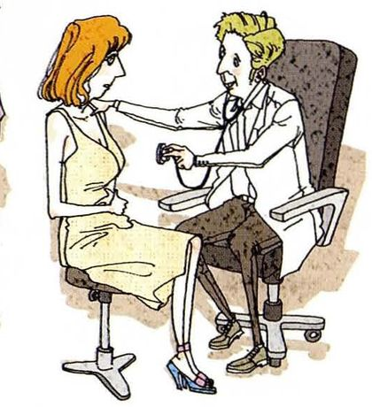
I want to be a doctor. /ˈdɑːktər/
The statementI want to be a doctor.
What to ask about「想当医生」这件事里，可问的是「你想当什么」。用 want to，所以问句里保留 want to，只把 be 后面的内容换成 What。
Questions you can ask①What do you want to be in the future? ②What do you want to be when you grow up? ③What do you want to do some day?
三个问句的差别，值得看清：
① in the future —— 中性，适用于任何年龄；② when you grow up —— 只对孩子说，对成年人说会失礼；③ some day —— 最模糊，也最随意，适合朋友之间闲聊。
「同一个意思的三种问法」，正是 Part III 想教的东西。
别把陈述句原封不动地加个问号。I want to be a doctor? 是回声问句，意思是「你说你想当医生？」—— 带惊讶或质疑。要真的提问，必须把 What 提到句首并加助动词。
04二十个陈述句：怎么问出好问题
每张卡三段：The statement 课本原句，What to ask about 说清这句话里哪块值得问、助动词怎么选，Questions you can ask 给三个问句 —— 一个最基本的、一个更具体的、一个更深一层的。
01
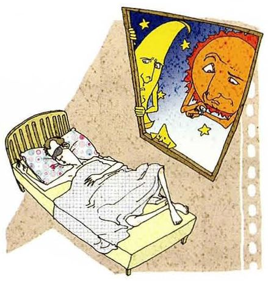
I slept all day yesterday.
The statementI slept all day yesterday.
What to ask aboutslept 是过去时 → 用 did，动词还原成 do。可问「做了什么」，也可问「为什么」。
Questions you can ask①What did you do yesterday? ②What time did you get up? ③What made you sleep all day — were you ill?
02
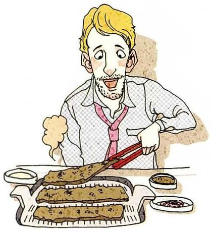
I like bulgogi.
The statementI like bulgogi.
What to ask about课本用的是韩国烤肉 bulgogi。换成你家的菜就能直接用。一般现在时 → 用 do。
Questions you can ask①What's your favorite food? ②What kind of Korean food do you like? ③What do you like about it?
03
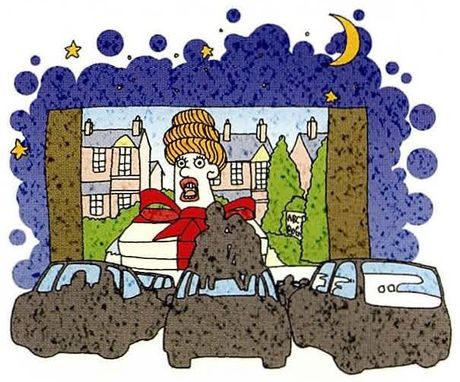
I'm going to see a movie tonight.
The statementI'm going to see a movie tonight.
What to ask about有 be going to（计划）→ 问句用 are you going to。也可问具体是哪部片。
Questions you can ask①What are you going to do tonight? ②What movie are you going to see? ③What's it about?
04
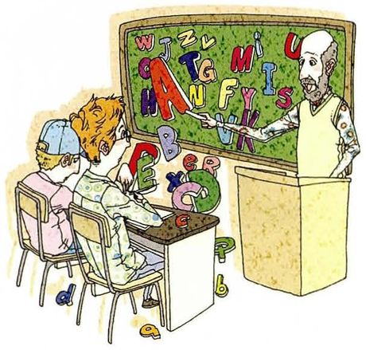
I teach English in middle school.
The statementI teach English in middle school.
What to ask about这题最适合用最经典的 What do you do? —— 问职业的标准说法。
Questions you can ask①What do you do? ②What subject do you teach? ③What grade do you teach?
05
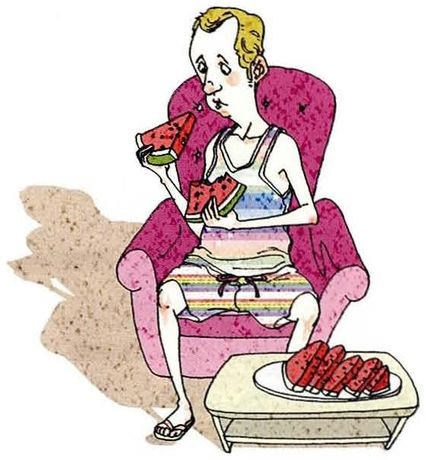
Watermelon is the best fruit to enjoy in summer.
The statementWatermelon is the best fruit to enjoy in summer.
What to ask about有 is 和最高级 → 用 what is 直接倒装，不需要助动词。
Questions you can ask①What's your favorite summer fruit? ②What fruit do you eat most in summer? ③What makes watermelon so good in hot weather?
06
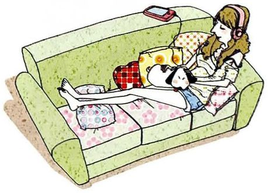
I feel relaxed when I listen to music.
The statementI feel relaxed when I listen to music.
What to ask about有「when + 条件」，可问的结果或条件。用 What makes you…? 最自然。
Questions you can ask①What do you do to relax? ②What kind of music do you listen to? ③What makes you feel relaxed?
07
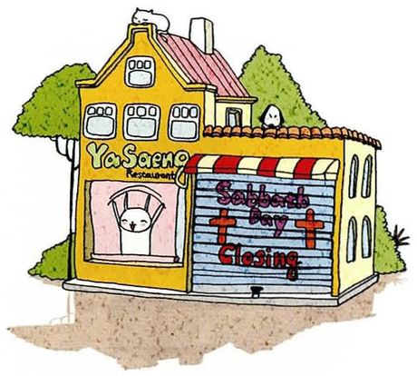
He goes to church every Sunday.
The statementHe goes to church every Sunday.
What to ask about主语是 he、动词是 goes（三单）→ 用 does，动词还原成 do。
Questions you can ask①What does he do on Sundays? ②What time does he go? ③What does he do there?
08
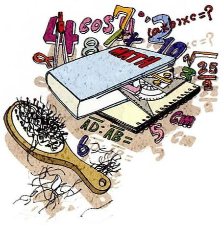
Math is the most difficult subject for me.
The statementMath is the most difficult subject for me.
What to ask about有 is + 最高级 → what is。这题很适合反问「为什么难」。
Questions you can ask①What's the most difficult subject for you? ②What makes it difficult? ③What subject are you best at?
09
I think using an English-English dictionary is a good way to study.
The statementI think using an English-English dictionary is a good way to study.
What to ask about这题问的是看法，用 What do you think…? 要注意后面接陈述语序。
Questions you can ask①What do you think is a good way to study? ②What kind of dictionary do you use? ③What's the best way to learn new vocabulary?
10
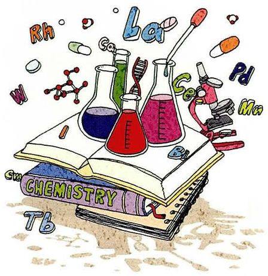
I study chemistry in college.
The statementI study chemistry in college.
What to ask about一般现在时 → do。可问专业本身，也可问为什么选它。
Questions you can ask①What do you study? ②What made you choose chemistry? ③What do you want to do with it?
11
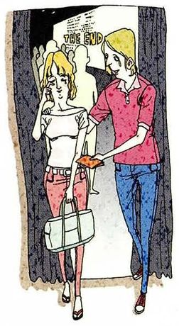
Yesterday I went to see a movie with my girlfriend.
The statementYesterday I went to see a movie with my girlfriend.
What to ask aboutwent 是过去时 → did + 动词原形。和第 3 题是一对：一个将来、一个过去。
Questions you can ask①What did you do yesterday? ②What did you see? ③What did she think of it?
12
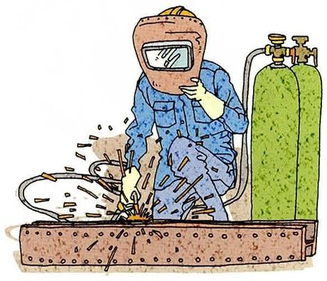
I must get a job after high school.
The statementI must get a job after high school.
What to ask about有 must，但口语里问句更常用 do you have to（must 的问句形式很少用）。
Questions you can ask①What do you want to do after high school? ②What kind of job are you looking for? ③What will you do with the money?
13
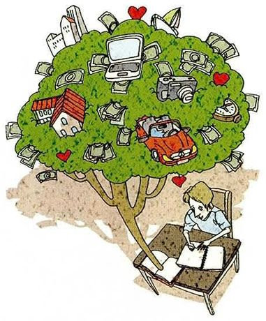
I have to study hard if I'm going to succeed.
The statementI have to study hard if I'm going to succeed.
What to ask about句中有「条件 + 目标」。可问目标，也可问对方怎么定义成功。
Questions you can ask①What do you want to succeed at? ②What does success mean to you? ③What are you studying for?
14
After college I want to be a reporter.
The statementAfter college I want to be a reporter.
What to ask about和第 1 课的例题同型（want to be）。这一题可以问「为什么」，比只问职业更有内容。
Questions you can ask①What do you want to be after college? ②What made you choose journalism? ③What kind of stories do you want to cover?
15
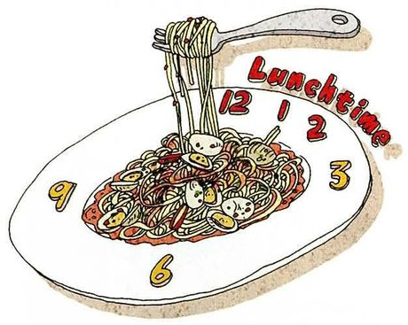
I want to have spaghetti for lunch.
The statementI want to have spaghetti for lunch.
What to ask about有 want to → what do you want。注意「吃什么」用 have … for lunch。
Questions you can ask①What do you want for lunch? ②What are you going to have? ③What's your favorite Italian food?
16
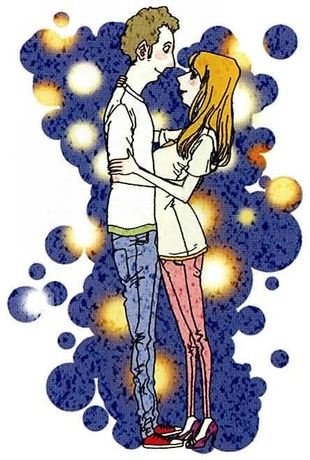
I have a date tonight with a new boyfriend.
The statementI have a date tonight with a new boyfriend.
What to ask about可问计划，也可问对方是什么样的人。第 2、3 个问句才是真正让对话继续的。
Questions you can ask①What are you doing tonight? ②What's he like? ③What are you going to do on the date?
17
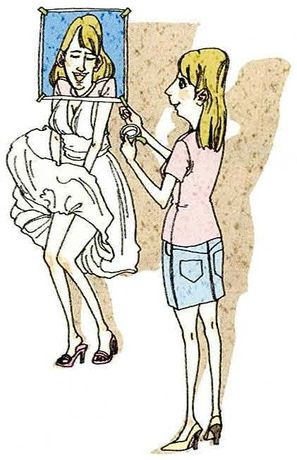
She wants to be a movie star.
The statementShe wants to be a movie star.
What to ask about主语是 she → 用 does。注意 wants 要还原成 want。
Questions you can ask①What does she want to be? ②What made her want that? ③What kind of movies does she want to be in?
18
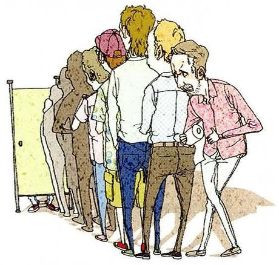
They always told me to be patient.
The statementThey always told me to be patient.
What to ask abouttold 是过去时 → did。这题可以问得很深：他们在等什么、从中学到什么。
Questions you can ask①What did they tell you? ②What were you waiting for? ③What did you learn from it?
19
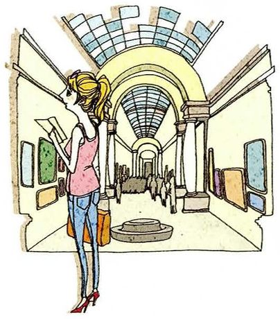
I spent all day in the Louvre when I was in Paris.
The statementI spent all day in the Louvre when I was in Paris.
What to ask aboutspent 过去时 → did。the Louvre 是卢浮宫，专有名词前要加 the。
Questions you can ask①What did you do in Paris? ②What did you see there? ③What was the best thing you saw?
20
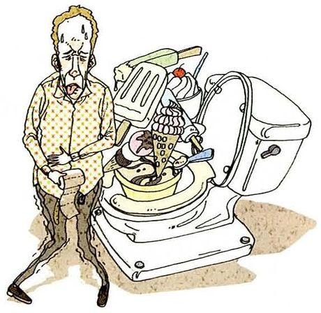
I think I ate too much ice cream last night.
The statementI think I ate too much ice cream last night.
What to ask about原因是过去时 ate → did。注意 ice cream 不可数，所以是 too much，不是 too many。
Questions you can ask①What did you eat last night? ②What flavor was it? ③What made you eat so much?
Students are accustomed to answering. 习惯于。to 后面接动名词 -ing
习惯于
communicate
/kəˈmjuːnɪkeɪt/
communicate with each other 交流。对人用 with
交流
proper
/ˈprɑːpər/
make proper questions 恰当的、得体的
恰当的
B · 造问句用的助动词和结构
表达
音标
课上怎么用
中文
What do you do?
/wʌt duː juː duː/
问职业的标准说法。听起来重复，但是固定用法
你做什么工作
What's he like?
/wʌts hi laɪk/
What's he like? 问他是什么样的人（问性格） 不是 What does he like（他喜欢什么）
他是什么样的人
What does it mean?
/wʌt dʌz ɪt miːn/
什么意思。课堂里最常用的一句
这是什么意思
What made you…?
/wʌt meɪd juː/
What made you choose it? 什么让你…… —— 问原因的万能句
什么让你
What kind of…?
/wʌt kaɪnd əv/
What kind of music…? 哪种。比 which 更宽泛
哪种
come up with
/kʌm ʌp wɪð/
come up with a question 想出
想出
C · Part III 常用的提问动词
词
音标
用法
中文
ask about
/æsk əˈbaʊt/
ask about his job 问关于某事
询问
follow up
/ˈfɑːloʊ ʌp/
follow up with another question 追问
追问
be curious about
/bi ˈkjʊriəs əˈbaʊt/
I'm curious about… 对……好奇
好奇
out of curiosity
/aʊt əv ˌkjʊriˈɑːsəti/
Just out of curiosity, what…? 出于好奇问一句
出于好奇
change the subject
/tʃeɪndʒ ðə ˈsʌbdʒɪkt/
let me change the subject 换个话题
换话题
get to the point
/ɡet tuː ðə pɔɪnt/
get to the point 说重点
说到点子上
06老师大概率会问的问题
这一课的老师提问方向变了：他会让你现场造问句，或者问「你平时会主动问别人问题吗」。
Is it hard for you to ask questions in English? Why?
Harder than answering, yes, and I only understood why in this lesson. When I answer, I control the content — I know what I want to say and the grammar follows. When I ask, I have to be sure I've understood the other person first, and I'm doing two things at once. Also, if I ask badly, it's obvious immediately, because they answer the wrong thing.
最后那句 they answer the wrong thing 是很准的观察 —— 问句错了，错误会立刻显形，这解释了为什么问比答更让人紧张。
Make a question from this: "I've been learning English for ten years."
A few options. The obvious one is "What have you been doing for ten years?" — but that's a bit odd. More natural: "What made you keep going for ten years?" or "What's the hardest thing about learning English for that long?" The first one asks about the activity, the second about the reason, the third about the experience.
现场造问句时，先说有三个方向，再一个一个给出，这样即使某一句不完美，整体也显得有条理。
Why is "What" the most common question word?
Because it can stand in for almost anything — an object, an activity, a reason, a profession. You can ask "what" when you don't even know which category the answer belongs to, which is exactly the situation you're in most of the time. "Which" needs options and "who" needs a person, so they're narrower.
从「不知道答案属于哪一类」这个角度解释 What 的通用性，比说「因为它用得最多」有内容得多。
Do you ask many questions in your daily life?
Fewer than I'd like, and I've noticed it's worse in English. In Chinese I interrupt constantly and ask for clarification; in English I nod and hope. And the cost is that I've had whole conversations where I understood about seventy percent and pretended the rest. So this lesson is uncomfortably relevant.
承认「在英语里我不懂也点头」，几乎是所有学习者共同的秘密。说出来反而轻松，而且老师一定能共鸣。
How do you ask a sensitive question politely?
I'd soften the frame rather than the grammar: "Can I ask you something?" first, then the question. That gives them a chance to say no before they've heard it. And I'd avoid asking what I could find out myself — if a question can be answered by searching, asking it wastes their time and shows I didn't bother.
soften the frame rather than the grammar —— 指出礼貌靠的是「先请求许可」而不是把句子改复杂，这是很实用的判断。
Give me three questions you'd ask someone you just met.
"What do you do?" is the standard one, though I've started avoiding it — it makes people explain their job before you know anything else about them. "What are you working on at the moment?" is better, because it covers students and people between jobs. And "What do you do when you're not working?" — that one usually gets an interesting answer.
对标准问题提出异议（I've started avoiding it）并给出更好的替代，是这一课最想训练的能力 —— 不只是会造句，还知道哪句值得问。
07这节课最容易犯的错
这一课的错误集中在助动词上，因为每道题都要造问句，而造问句的成败就在助动词。
✗What does he goes to church? ✓What does he do on Sundays?
does 后面动词必须还原。第 7、17 题都会撞上这个坑。
✗What did you slept all day? ✓What did you do yesterday? / Why did you sleep all day?
did 后面动词还原成原形。而且 slept 本身已经是「睡」，问「做了什么」要用 do。
✗What you want to be? ✓What do you want to be?
漏了助动词 do。这是中国学生造问句时最常见的错误，说话一快就掉。
✗What is your favorite fruit is watermelon? ✓What's your favorite fruit? / Is watermelon your favorite fruit?
问句和答句混在一起了。要么保持问句，要么改成一般疑问句。
✗What does he like? （想问「他这个人怎么样」） ✓What's he like?
What's he like? 问性格；What does he like? 问他喜欢什么。只差一个 is，意思完全不同。第 16 题会用到。
✗What do you think is the most difficult subject for me? 用来回答第 8 题 ✓What's the most difficult subject for you?
造问句时要把 me 换成 you。这一课的陈述句全用 I，转换时人称必须跟着变，很容易漏。
✗What did you eat too much ice cream? ✓Why did you eat so much ice cream? / What did you eat last night?
「吃了太多冰淇淋」这个内容不适合直接套 What —— What 问的是「吃了什么」，问「为什么吃那么多」要用 Why 或 What made you…。
✗I want to be a doctor? 想提问 ✓What do you want to be?
陈述句加问号是回声问句，表示惊讶或质疑（「你想当医生？」），不是真的在提问。
08五十分钟怎么用
这一课最好玩的地方是：你可以反过来问老师。Part III 的全部意义就在这里。
课前 10 分钟：背第 02 节 A 表的五行看原句的动词形式 → 选 do / does / did / be / 情态动词。这一课的语法风险全在这张表里。
给每句话只准备一个问句，但要准备得深基本问句谁都会造。真正的差别在第三个问句 —— What made you…? 这类追问，才是让对话继续的。
上课时：问完老师，等他答，再追问这一课最值钱的练习是真实的问答往返。造完问句就停，等于只做了一半。
课后：把第 06 节最后一个问题用在自己身上想三个你会问刚认识的人的问题，并说明为什么不问 What do you do?。能说清这个，说明你已经在思考「什么问题值得问」了。